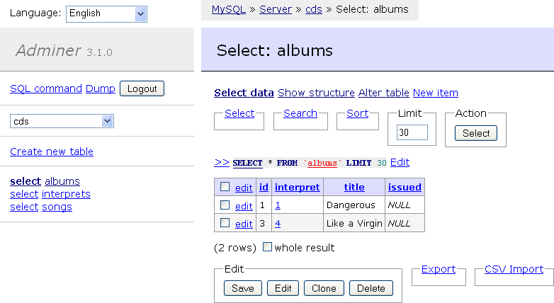
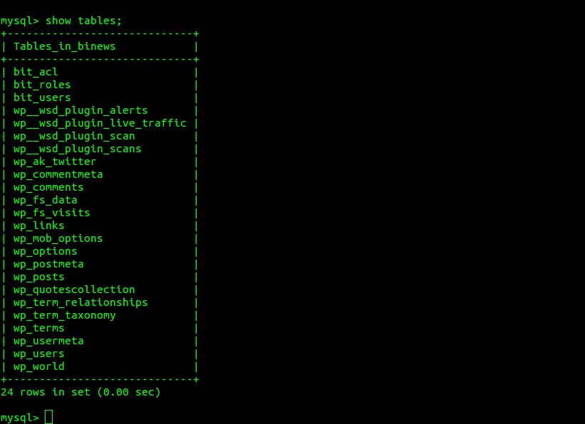
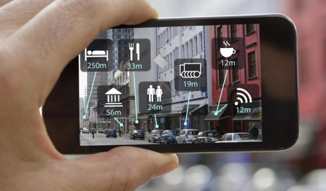
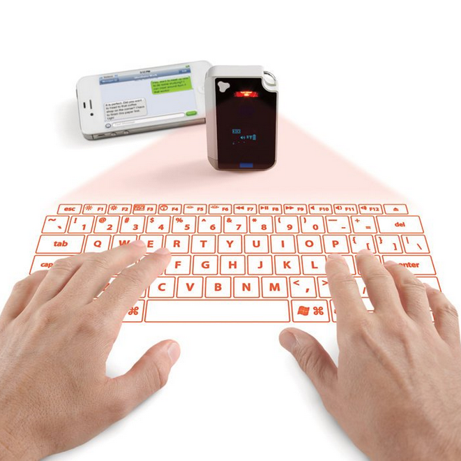

Interface Homme Machine
Introduction
Nathanaël Martel
Interface Homme Machine
Qu’est-ce qu'un Interface Homme-Machine ?
Logiciel (ou matériel) qui permet à un utilisateur final d'intéragir avec la machine.
Exemples :
- Terminal Unix et ligne de commande
- Tableau de bord d'un avion
- Manipulation de document : libre office…
- Action sur une application
But de l'Interface Homme-Machine ?
Aider les utilisateurs à réaliser des choses
Ça n'est pas :
- Impressionner la gallerie avec des effets et des animations
- Aider des utilisateurs comme vous
- Faire plaisir à votre patron / commanditaire
Entre l'Homme et la Machine
logique, mécanique, électronique…
Machine
IHM
Humain
Science cognitive, Psychologie, Sociologie…
S'assurer que les systèmes (informatiques) sont bien adaptés aux besoins des utilisateurs.
Les besoins des utilisateurs
- ce ne sont pas les besoins du patron : « il nous faut une application graphiquement superbe ! »
- ce ne sont pas les besoins du développeur :« je peux facilement insérer une animation ici »
- ce ne sont pas les désirs de l’utilisateur : « ...et ça serait bien d’avoir une fonction e-mail dans mon navigateur »
Pourquoi c'est important ?
- Commercialement c'est plus difficile de vendre un système avec un mauvaise interface. Un bon interface va permettre aux utilisateurs d'acheter plus facilement.
- Aide les gens ils seront plus efficace (productif) avec un bon interface.
- Sauver des vies imaginez dans un hopital… ou un avion
Définitions
Utile
Permettre à l’utilisateur de faire ce qu’il a besoin de faire
Métrique : oui / non
Définitions
Utilisable
- La simplicité d’apprentissage temps d'apprentissage, pourcentage du système utilisé au travers du temps
- L’efficacité des utilisateurs temps de réalisation de la tâche
- La sécurité des actions sur le système nombre d'erreur réalisé, importance des conséquences
L'interface a un but
- Information touristique rapide à apprendre
- Réservations d'avion tâche réalisé rapidement
- Système vitale critique (Hôpital) peu d'erreur
- Feuille de calcul utilisation à travers le temps
- Jeux satisfaction subjective
Exemple : Base de donnée MySQL
Interface de construction de requête

rapide à comprendre, peu d'erreur sur les tâches simple, lenteur des tâches : Novice
SQL

lent à apprendre, difficile à se souvenir, beaucoup d'erreur, rapidité sur les tâches complexe : Expert
Principe 1 : Empathie
Problème : connaître les utilisateurs.
Qu'est ce qu'ils font ?
tâche habituel, but
Qu'est ce qu'ils savent ?
formation, expérience
Qui sont-ils ?
personnalité, confiance, handicap, age…
Interface universelle ?
Différentes capacités cognitive
Différentes personalités
Différentes culture
Des Handicaps
Des vieux et des Enfants
Difficultés de la conception d'IHM
Identifier les besoins de l'utilisateur
Proposer une solution d'interface
Faire abstraction de la logique métier
Être objectif
Risques d'un mauvais IHM
Rejet pur et simple par les utilisateurs
Frustration
Coût d'apprentissage (formation, temps)
Perte de productivité
Utilisation incomplète
Danger physique
Pourquoi vous avez besoins de vous interresser à l'IHM ?
Économique
ça coûte moins cher si vous le faites vous même que si vous faites appel à un expert.
Pragmatique
les informaticiens ont le pouvoir, il faut donc que vous ayez une approche centré sur l'utilisateur.
D'où est-ce qu'on vient ?
- Cartes perforés
- Voyants lumineux
- Ligne de commande
- Souries et fenêtres
- Interface tactile
- Multitouche
Où est-ce que l'on va ?

Où est-ce que l'on va ?

Où est-ce que l'on va ?
- Réalité augmenté
- Écran translucide
- Les applications remplace les fichiers
- Objects connecté
- …
Conclusion
L'IHM fait le lien entre la machine et l'utilisateur
Pour avoir une bonne interface, il faut connaître l'utilisateur
Pour avoir une bonne interface, il faut connaître l'utilisateur